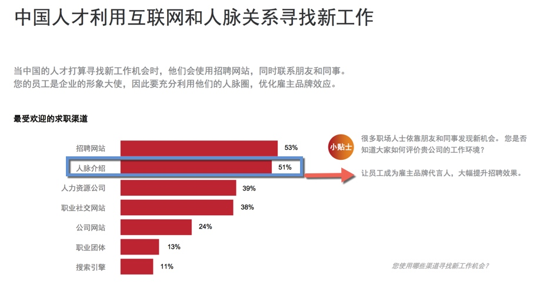

开放式招聘 005：全员招聘——内部招聘
内部招聘，不仅促进规范内部人员的流动秩序，也是补充高素质人才的一种重要方式。
一些朋友问我，内部招聘是什么？ 是不是用人部门跟HR 说，那个人不错，给我调动我们部门吧就可以了呢？
是不是员工说，我已经得到另一个总监的同意了，他同意让我去他们部门做xx岗位，然后就调过去呢？
除非你乐意看到两个部门在拉锯，不然你得想想如何规范内部人员流动。
规范内部人员流动，有什么方法呢？我们来看看我今天的主角——内部招聘
内部招聘其实源于内部人员流动，为了规范内部人员的流动秩序。
不同风格的内部招聘
从招聘的角度，以往从业经历中，我操作过 2 种不同风格的内部招聘方式：
A：高度定制的流动：
这里的竞聘有一个起始条件：员工必须达到绩效标准才能得到晋升机会。
3个主要环节：选拔-培训-竞聘
绩效达标的人才能被人力资源部门选出来，参加下一步的培训；
企业先挑选出部门内绩效表现好的员工，然后这批在各部门里达到绩效标准的人，脱岗1-2周参加内部训练；进行短期的训练
这批人会在这个阶段接受短期的内训，参加企业依据上一级别岗位的素质要求开发的课程；训练后才到我们平时意义上的内部面试
组合式的结构化面试，出结果。日常工作的绩效表现和培训阶段的学习成绩也会成为面试的基数（影响结果/排名）；
如果说上面的是被选择来参加高度定制的流动
那么下面我说到的另一个操作则是自由流动
B： 自由流动
这里的岗位员工个人可以自由申请，公司尊重员工个人的选择。
企业在内部发布各个空缺岗位信息（开放岗位），员工根据此信息来申请；
申请的员工知会现直属上级，征求部门经理的意见；
同时该空缺岗位，招聘人员也会在外部渠道发布空缺职位招聘信息；
申请简历到达 招聘人员手上后，招聘人员根据简历情况，安排内外部员工参加面试
- 此时的面试，一般都会有内外部员工参加。
- 根据不同人员的表现，进行打分，同等条件下，内部员工优先适配；
为什么它是补充高素质人才的一种重要方式？
水往低处流，人往高处走
很容易看到，上面两种方式都能发现人才，因为有一个重要因素——人员的流动是倾向于往上流动。
它是内部人员发展的推进器。
两种不同风格，作用的方式不同：
大浪淘沙——挑出来高素质人才
机制里，推着你往前：
当同期的都参加过竞聘了，我们的员工会想：为什么我还没有呢？是个人哪方面表现不足呢，绩效应该还能提高吧，下次到我了吧？机制里，不出色就掉队：
发展不起来的员工，慢慢跟不上需求，慢慢就被新鲜血液淘汰。毛遂自荐——高素质人才跳出来
这个机制，提供机会。给个人选择的机会，意味着，一个开放的、 宽松的流动机会，只要有能力，申请了你就站在了展示的舞台。
展示后，如果成功，新的岗位，新的机遇。
而哪怕不成功，你还将能和内外部人才的对比，各位实力技能如何，我如何，我还需要哪些提升？内部面试官是很乐意与员工沟通，回去提升的同时，面试官一般也会关注到其中表现不错的员工——也会纳入人才库。
内部招聘，不仅有效地保留了人才，更让人才有机会与企业一同发展，为企业发展提供火力。
它还是一个吸引外部求职人员的信号灯
不重视人才发展的公司，一般你不会地看到内部清晰的挑选机制。
它也许会含糊其词/义正辞严：“对，你将能在我们企业得到很好的发展，你看这个通道那个通道。”
而通常有上面两种形式的选人机制的企业，还是更值得你去关注的。
为什么呢。因为它不是明显在说吗——“我给你机会要不要，要，那就来吧，我们的机会是可见的。”
目前实践如何呢
然而这一块的数据和现实并不好看：
国外的数据
哈佛商学院教授鲍里斯 · 格鲁斯伯格（Boris Groysberg）在他 2013 年对高管预备项目参与者的调研中发现了同样问题：满分为 5 的条件下，受访者给其公司的上升通道打分平均为 3.2；相比之下，他们给现任 CEO 打 4 分, 给现任高管团队打 3.8 分。调查中的其他一些反馈也同样令人忧心：没有任何一项人才管理实践得分超过 3.3，岗位轮换等关键的员工培训项目仅得 2.6 分。
亿康先达高级人才顾问，克劳迪奥 · 费尔南德斯 - 阿劳斯在高管论坛上进行的访问进一步证实上述观点：
参与访谈的 823 名领导者中，只有 22% 的人看好他们公司上升通道；仅有 19% 的人认为，很容易就能吸引到最杰出人才。
国内数据
来自Linkedin 2016中国人才招聘趋势报告数据显示

在国内大部分企业在「内部招聘」实践方面还是没有制度化流程化，国内内部招聘的实践同样并不乐观。

如果你不想企业内部人员流动导致部门拉锯，想内部人员和企业一同进步发展，想更多地吸引外部人才，在人才竞争中迎头赶上，那么选一种机制吧。
哪种好操作呢
前者侧重服务企业发展，后者兼顾尊重人性。
前者侧重晋升，后者兼顾晋升与横向的流动
两种风格不同的实践，各有利弊。当然中间烦恼的事不少（可以讲一箩筐。。。。）
1）自由流动的弊端：
比如 我们看到尊重员工个人的选择也是一种尊重人性的做法：
个人如果申请开放岗位，有一种情况，我们不得不思考：
- 要么是员工觉出自己在部门内没发展或者不喜欢自己的部门，寻求好的发展机会。
- 要么是员工认为自己可能得到不同的发展，可以做出不同的贡献，得到提升的机会。
这个时候用人经理之间的协调。。。部门利益 个人利益 公司利益的协调。。。
此时倾向于哪方呢？既是公司文化也是部门管理的权衡了。
最终是要寻到其中的合力。
2） 高度定制的流动的弊端
高度定制的流动，凸显的是赛马而不是相马。然而它的另一面其实你还得思考：
比如
- 你所谓的赛马真的是我想赛马吗
你所谓的赛马是真的在赛马吗
既然是定制，那么也不是那么好定制出来的，也是需要前期投入更多的资源，比如 根据素质模型定制的选拔标准、各个环节的训练成本。。。
高度定制的流动，它更是偏向于晋升的一种流动。
对于快速发展的企业，那么自然推荐高度定制的流动。
如何实施呢
企业发展到一定规模的时候，为了有序地规范人员流动，不管是内部流动向上/横向流动，还是外部流动，企业有必要进行内部招聘，以引导流动的人才去到企业发展需要的地方。
如何实施呢？
请选择其中一种实施。
（具体实施需另起一文）
欢迎联系 Arvin Yu , 邮箱：yuyandong@outlook.com
或长按以下二维码关注 公众号： 稻田无忧

本作品采用 知识共享署名-非商业性使用-禁止演绎 3.0 Unported许可协议 进行许可。

开放式招聘 004：全员招聘——内部推荐
内部推荐（又称员工推荐），是企业通过发动企业内部员工调用自己的人脉资源来帮助公司推荐优秀候选人的招聘方法。
为什么内部推荐
国情如此：

我们看2013 年的数据
高素质人才的招聘更具有竞争和示范作用，是招聘的典型故数据以此为主。
数据告诉我们：
1）高素质人才招聘更多来源于内部推荐——来自LinkedIn 2013 全球人才招聘趋势的数字

2）内部员工比猎头行动还要厉害——来自腾讯当年的电商部门
通过内部伯乐这个招聘渠道招到的人才占到整个社会招聘的 48%，资深岗位内部伯乐的贡献率也达到 35% 之多——这让和腾讯合作的猎头们‘叫苦不迭’，他们不知道竞争对手是我们的内部员工
2015年的数据 (图表来自linkedin )
显示中国企业在2015年中招聘到的高质量员工有52% 来源于内部推荐

2016年的数据，只会升，不会降低
一个是企业的招聘需求增加，二个是人才对自己的职业发展要求越来越高。
招聘慢了的话，这个高素质人才就跑到别家公司上班了，哪怕你是口头预定了offer 给他。
一个优秀的人才，在市场上不出 1 周就基本上被抢空了。
紧急用人的时候，HR 招聘人员动作再快（如果他没有做预见性招聘工作），也比不上一个部门全体来推荐的动作。
要知道某个狼性的企业有一年还特别 要求员工过完年上班的时候，必须要给公司推荐 xxx 个人的。
显而易见，高素质人才的招聘本来就是资源的激烈竞争，内部招聘无论是成本还是时间上都是一个很霸气的存在——前提是你用好它，那么如何做呢？
内部推荐实施
从下图 Linkedin 数据来看，大部分的国内企业的内部推荐的有效性还不到全球平均水平 ，可见（ 32%——> 39%——> 65%）仍然有很大的提升空间，能用来提高内部推荐的有效性，为企业高速发展提供更有效的支持。

实施的时候有哪些节点呢以及要注意哪些？
一般节点
- 制定奖励政策
- 发布悬赏职位名单
- 制作内部推荐登记表，方便员工发送或打印提交 HR 及汇总
- Weshare 网络和线下公告，比如 公司通勤车、茶水间、邮件
- 推荐进度反馈
- 内部推荐问答
具体实施方法其实还有很多
- 分类大法，优秀的人周围也是聚集了更多优秀的人。比如统计出过去 12 个月里招聘过来的表现优秀的员工，重点让他们来推荐。
- 在招聘后，入职阶段。。。。
特别关注点
内部推荐项目，详细定义激励的要素及操作的流程。
- 在试运行的过程中，调查参与推荐的员工， 问他们这个项目里哪些方面对他们的参与有促进作用？哪些方面还需要提升？并询问他们期望得到的奖励和激励的列表，其中哪些部分尤其让他们感觉到兴奋？
- 你也可以调查哪些没有参与的员工，哪些方面阻碍了他们参与推荐？
- 在奖励和激励的列表里，哪一个可能会提升他们的参与度？
- 走出去与其他公司 HR 进行探讨，鉴别和分享最有效或最新的方式，激励员工内部推荐
其实内部推荐，基本的还是离不开全体员工参与的意愿。如果不能长效地做，只是打算试探、试试这个渠道/方法有没有效果，那么员工的意愿就会受到打击了——他也不是天天有朋友在找工作，也不是每一个朋友他都会推荐来的，企业在这一块如何做呢？
a）要做出示范效应
示范给大家知道，比如这个员工一直有推荐，是不是给定个伯乐勋章呢，弄个定制的铭牌呢？该宣传的就要宣传。比如奖励的信息要让全体人员知道吧，鼓励的气氛要营造吧。
b) 要做水磨功夫
没有合适岗位的时候也要跟进员工推荐的简历，哪怕这个简历不合格不合适，也要跟进，该感谢的感谢，该保存进人才库的保存进去。可千万别弄个不更新的人才库。
内部推荐补充：
高端岗位还可以深入使用
如果企业规模小，用人急，怎么办？这个方法有用吗？
它们其实都要指向——A级人才
行业分布应该懂吧（又是一篇长文。。。）
欢迎联系 Arvin Yu , 邮箱：yuyandong@outlook.com
或长按以下二维码关注 公众号： 稻田无忧
本作品采用 知识共享署名-非商业性使用-禁止演绎 3.0 Unported许可协议 进行许可。
Copyright © 2015 Powered by MWeb, Theme used GitHub CSS.